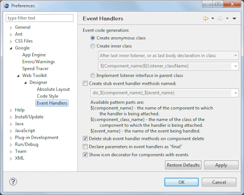
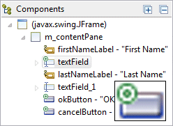

|  This page is used to control various Google > Web Toolkit > Designer > Event Handlers options. Event code generationThis preference determines how event handlers are generated. The first option, Create anonymous class, generates an anonymous adapter class located inline with the widget definition. For example:
The second option, Create inner class, generates an adapter
class as an inner class. Options are provided to add the inner class at
the beginning or end of the class as well as specify the pattern used to
name the inner class:
The pattern can include the template variables (names enclosed between "${" and "}") shown below. Capitalizing the name of any variable will cause the value of the variable to be capitalized before it is inserted into the resulting text.
The third option, Implement listener interface in parent class,
adds the the listener interface to the parent class and adds the
appropriate methods to the class definition. For example:
Create stub event handler methods namedThis preference determines whether the text field below it is
enabled.� Now whenever an event
handler is added, a method stub is created with the name given in the text
field.� A line of code is also added to
the event handler which calls the newly created method. This preference determines whether handler methods associated with a
component are deleted when the component is deleted. This preference determines whether 'final' is added to the parameters
in event handlers. This preference controls whether components with event handlers are shown with
an icon decorator.
 |